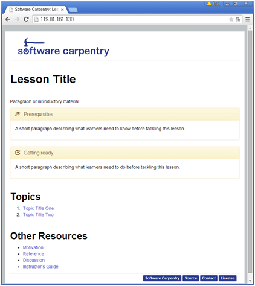

데이터 과학을 위한 저작도구
정적 웹콘텐츠 개발 가상서버 구축
학습 목표
- 정적 웹콘텐츠 개발 툴체인(Tool Chain)을 이해한다.
- 정적 웹콘테츠 개발 가상컴퓨터 환경을 구축한다.
- 우분투 경로명 환경설정을 이해한다.
정적 웹콘텐츠 제작 툴체인(Tool Chain)
정적 웹콘텐츠를 제킬(Jekyll) 기반으로 구축하기 위해서 제킬(Jekyll)과 관련된 소프트웨어도 함께 버젼을 맞추어서 설치해야 된다. 특히, 소프트웨어 카펜트리에서 정적 웹콘텐츠 저작을 위한 좋은 툴을 개발하여 활발히 사용되고 있다. 소프트웨어 카펜트리 저작 도구는 pandoc, jekyll에 기반하고 있고 근본에는 루비언어 기반으로 글로벌 협업도구 GitHub 인프라가 깔려있다.
Package Manager Language Webpage Reuse Plugins (SWCarepntry)
+-----------+ +----------+ +-----------+ +---------------+
| | | | | | | therubyracer |
| RVM |---------->| Ruby |---------->| Jekyll |<--------->| pandocfilters |
| | | | | | | kramdown |
+-----------+ +----------+ +-----------+ +---------------+
^
Document Converter |
+-----------+ |
| | |
| Pandoc |----------------------------------------
| |
+-----------+ 
1. 팬독(Pandoc) 설치
sudo apt-get install pandoc 초기 버젼설치를 하지만 이전 버젼이라 최신 버젼으로 갱신하는 2단계 설치과정을 거친다.
1.1 Pandoc 초기 설치
sudo apt-get install pandoc 명령어를 통해 pandoc을 설치할 경우 우분투 기본설정된 소프트웨어 저장소 정보가 최신이 아니라 이전 버젼 pandoc이 설치되어 다른 소프트웨어와 의존성 문제를 많이 일으킨다.
root@std-ubuntu:~# sudo apt-get update
root@std-ubuntu:~# sudo apt-get install pandoc
root@std-ubuntu:~# pandoc -vpandoc 1.12.2.1
Compiled with texmath 0.6.5.2, highlighting-kate 0.5.5.1.
Syntax highlighting is supported for the following languages:
actionscript, ada, apache, asn1, asp, awk, bash, bibtex, boo, ..............................................................sql, sqlmysql, sqlpostgresql, tcl, texinfo, verilog, vhdl, xml, xorg, xslt, xul, yacc, yaml
Default user data directory: /root/.pandoc
Copyright (C) 2006-2013 John MacFarlane
Web: http://johnmacfarlane.net/pandoc
This is free software; see the source for copying conditions. There is no warranty, not even for merchantability or fitness for a particular purpose.1.2 Pandoc 최신 설치
pandoc 최신 버젼을 설치하여 사전에 여러 문제를 해결한다. 우분투 질문(askubuntu)사이트에 cabal을 이용한 pandoc 버젼을 올리는 방법이 나와 있다. 시간이 조금 걸릴 수 있으니 참조한다. cabal을 설치하고 cabal update하고, PATH=$HOME/.cabal/bin:$PATH 명령어로 해당 터미널에서만 환경설정하고 나서, cabal install alex happy을 통해 alex, happy를 설치하고, cabal install pandoc pandoc-citeproc 명령어로 pandoc과 pandoc-citeproc를 설치한다. alex, happy를 사용한 방법은 하스켈(haskell) 플랫폼 없이 pandoc을 설치하는 방법이다.
sudo apt-get install zlib1g-dev도 없으면 오류가 발생하여 설치가 되지 않을 수 있으니 사전에 설치한다.
root@std-ubuntu:~# sudo apt-get install zlib1g-dev
root@std-ubuntu:~# sudo apt-get install cabal-install
root@std-ubuntu:~# cabal update
root@std-ubuntu:~# PATH=$HOME/.cabal/bin:$PATH
root@std-ubuntu:~# cabal install alex happy
root@std-ubuntu:~# cabal install pandoc pandoc-citeproc
root@std-ubuntu:~# pandoc -vpandoc 1.14.0.4
Compiled with texmath 0.8.2, highlighting-kate 0.6.
Syntax highlighting is supported for the following languages:
abc, actionscript, ada, agda, apache, asn1, asp, awk, bash, ...........xslt, xul, yacc, yaml, zsh
Default user data directory: /root/.pandoc
Copyright (C) 2006-2015 John MacFarlane
Web: http://johnmacfarlane.net/pandoc
This is free software; see the source for copying conditions. There is no warranty, not even for merchantability or fitness for a particular purpose.구글 그룹스 질의 응답에도 나와 있지만, 경로설정을 빼먹지 말자. 가상 컴퓨터 로그인할 때 자동 실행되는 우분투의 경우 .profile에 다른 리눅스이 경우 .bash_profile 파일 맨 하단에 다음 export PATH=$HOME/.cabal/bin:$PATH 명령어를 삽입한다. 따라서, 다음 로그인할 때 자동으로 설치한 최신 pandoc을 실행한다. 혹은, .bashrc 파일에 동일 명령어를 하단에 삽입하여 명령어가 실행될 때마다 수행되게 할 수도 있다.
export PATH=$HOME/.cabal/bin:$PATH2 루비(Ruby) 설치
제킬(Jekyll)은 로컬 컴퓨터에서 정적 웹콘텐츠(Static Web Contents) 개발을 지원하는데 루비 의존성이 있다. 특히 옛날버젼 루비(Ruby)를 설치하면 여러가지 오류가 생겨 RVM(Ruby Version Manager) 도움을 통해 루비를 설치하고 제킬(Jekyll)을 올린다.
2.1 깨끗한 우분투 설치 환경 만들기
RVM을 설치하기 전에 깨끗하게 우분투에 있는 이전버젼 ruby, ruby-rvm을 제거한다.
root@std-ubuntu:~# sudo apt-get remove --purge ruby-rvm ruby
root@std-ubuntu:~# sudo rm -rf /usr/share/ruby-rvm /etc/rmvrc /etc/profile.d/rvm.sh2.2 rdoc와 ri 문서화 모듈 없이 설치 및 관련 소프트웨어 설치
rdoc와 ri 문서화 모듈을 루비 설치시 동반할 경우 속도가 매우 느릴 수 있어 빠르게 하기 위해서, 문서화 모듈 없이 설치를 진행한다. gem: --no-rdoc --no-ri를 설정파일 하단에 삽입하고 tail 명령어로 확인한다.
root@std-ubuntu:~# echo 'gem: --no-rdoc --no-ri' >> ~/.gemrc
root@std-ubuntu:~# tail ~/.gemrcgem: --no-rdoc --no-riRVM 루비 버젼관리자를 설치하기 전에 git, build-essential, curl, wget을 미리 설치한다. 사실 rvm 설치할 때 필요한 소프트웨어다.
root@std-ubuntu:~# sudo apt-get install -y git build-essential curl wget2.3 rvm 통한 ruby 설치 및 환경설정
rvm을 로그인할 때 자동으로 적재(load)되록 bash 쉘인 경우 ~/.bashrc 스크립트에 다음 행을 추가한다. 그리고 ruby를 설치한다. curl -sSL https://get.rvm.io | bash -s stable --ruby 명령어를 실행하면 루비를 설치하는데 시간이 걸리니 커피를 한잔하고 와도 좋다.
root@std-ubuntu:~# echo "[[ -s '${HOME}/.rvm/scripts/rvm' ]] && source '${HOME}/.rvm/scripts/rvm'" >> ~/.bashrc
root@std-ubuntu:~# gpg --keyserver hkp://keys.gnupg.net --recv-keys 409B6B1796C275462A1703113804BB82D39DC0E3
root@std-ubuntu:~# curl -sSL https://get.rvm.io | bash -s stable --rubyrvm을 통한 ruby 설치가 완료되어 시스템을 다시 리부팅하거나 로그아웃하고 나서 다시 로그인한다.
root@std-ubuntu:~# ruby --versionruby 2.2.1p85 (2015-02-26 revision 49769) [x86_64-linux]3. 제킬(Jekyll) 설치
루비 최신 버젼이 설치되면 제킬 및 관련 소프트웨어 설치는 쉽게 설치할 수 있다. 제킬은 의존성이 Ruby, RubyGems, NodeJS가 있다. 다만, NodeJS는 덩치가 크고 무겁기 때문에 대신에 therubyracer를 대신 설치한다. jekyll, kramdown, pandocfilters를 차례로 설치한다.
pandocfilters는 파이썬 설치 모듈을 필요로 해서 python-pip를 설치한 후 pip install 명령어로 설치한다.
root@std-ubuntu:~# gem install therubyracer
root@std-ubuntu:~# gem install jekyll
root@std-ubuntu:~# gem install kramdown
root@std-ubuntu:~# apt-get install python-pip
root@std-ubuntu:~# pip install pandocfilters4. 정적 웹콘텐츠 제작 테스트
마크다운으로 저작을 한 후에 HTML을 비롯한 다양한 콘텐츠 형식으로 변환이 되는지 테스트를 하기 위해서 먼저 GitHub에서 예제 파일을 하나 다운로드한다.
root@std-ubuntu:~# git clone -b gh-pages https://github.com/swcarpentry/lesson-example.git
root@std-ubuntu:~# cd lesson-example/
root@std-ubuntu:~/lesson-example# make preview마크다운 .md 파일을 .html 파일로 변환한다.
pandoc -s -t html \
--smart \
--template=_layouts/page \
--filter=tools/filters/blockquote2div.py \
--filter=tools/filters/id4glossary.py \
-Vheader="$(cat _includes/header.html)" -Vbanner="$(cat _includes/ba
nner.html)" -Vfooter="$(cat _includes/footer.html)" -Vjavascript="$(cat _include
s/javascript.html)" \
-o 01-one.html 01-one.md제킬을 이용하여 서비스로 사용할 정적 웹콘텐츠를 /var/www/html/에 생성하자.
root@std-ubuntu:~/lesson-example # jekyll build -d /var/www/html/Configuration file: none
Source: /root/lesson-example
Destination: /var/www/html/
Generating...
done.
Auto-regeneration: disabled. Use --watch to enable.
5. 우분투 경로명 환경 설정
pandoc를 최신 버젼으로 버젼을 올릴 때 경로설정에 많은 애로를 얻게 얻는다. echo $PATH 명령어를 통해서 현재 설정된 경로를 확인한다.
5.1. 경로명(PATH) 확인
echo $PATH 명령어를 통해 현재 지정된 경로를 확인한다.
root@std-ubuntu:~# echo $PATH/usr/local/sbin:/usr/local/bin:/usr/sbin:/usr/bin:/sbin:/bin:/usr/games:/usr/local/games5.2. 경로명(PATH) 변경
경로를 지정하는 방법은 여러가지 방법이 있다. 도스 시절의 autoexec.bat 파일에 컴퓨터가 부팅될 때 자동 실행되게 설정을 했듯이 우분투에서도 비슷한 접근법을 취한다.
.bashrc: 쉘 명령어가 실행될 때마다 실행될 경로명 지정.profile: 최초 로그인할 때 실행될 경로명 지정 (다른 리눅스에서는 파일명이.bash_profile)export:export명령어를 쉘 프롬프트에 경로명과 함께 적어 일시적으로만 사용한다.
5.3. 변경한 경로명(PATH) 적용
우분투 .profile에 적용(다른 리눅스 버젼이면 .bash_profile)했다면 다시 로그인하면 된다. 특히 ssh 로그인을 사용하는 경우 유용한다. 다시 로그인하지 않고 변경한 경로명을 즉시 적용하고자 할 경우 다양한 명령어를 통해서 가능하다. 기본은 source ~/.bashrc지만 단축 명령어가 여러가지가 있다. . ~/.bashrc, exec bash도 가능하다.
root@std-ubuntu:~# source ~/.bashrcroot@std-ubuntu:~# . ~/.bashrcroot@std-ubuntu:~# exec bash